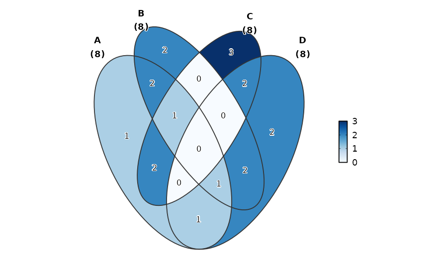
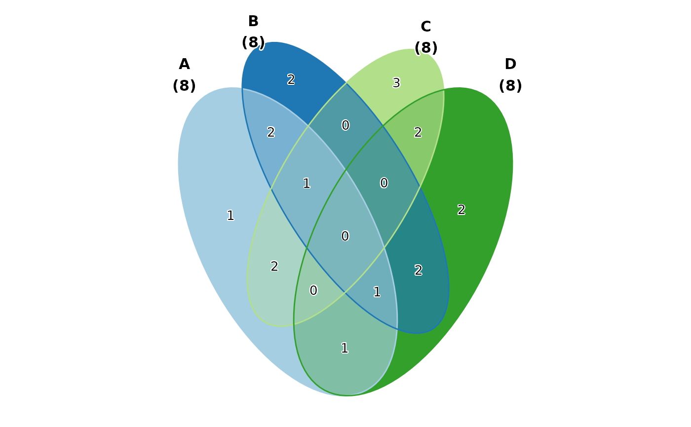
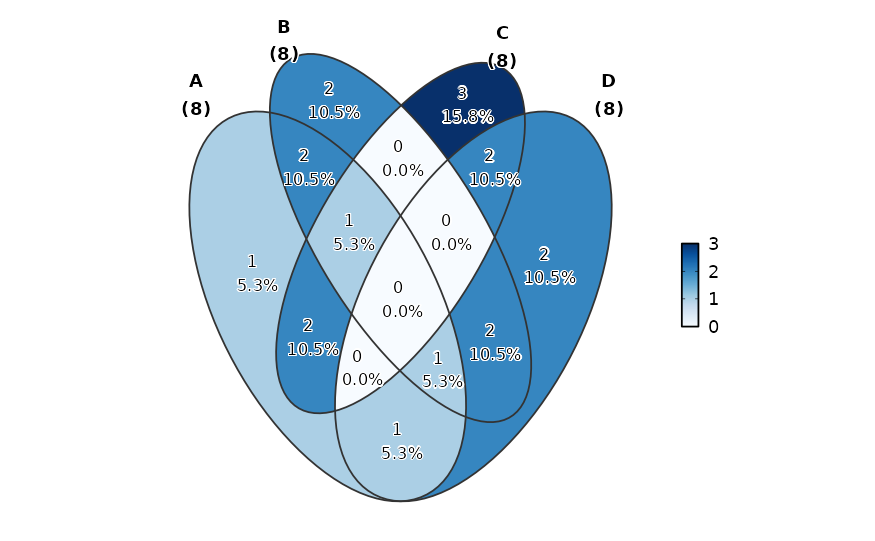
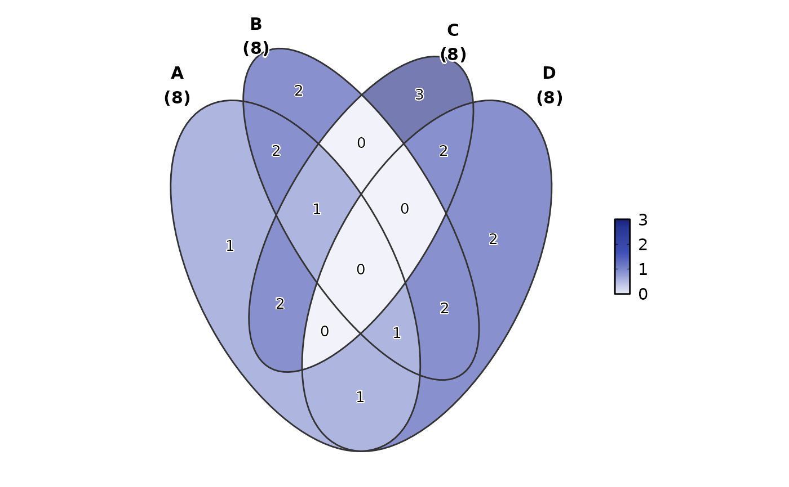

Draws Venn or Euler diagrams that visualise the overlap relationships among
multiple sets. Supports four input formats: long (one row per element-set
pair), wide (logical/0-1 columns per set), a named list (element vectors
per set), and a pre-computed VennPlotData object.
Intersection regions can be filled by a continuous colour gradient encoding
the element count (fill_mode = "count" / "count_rev") or by
blended set colours (fill_mode = "set"). Region labels can display
counts, percentages, both, or a custom function. Set labels always show
the set name and its total element count.
Use split_by to produce separate Venn diagrams for each level of a
grouping variable. Note that split_by is only supported when
data is a data frame (list and VennPlotData inputs cannot be
split).
Usage
VennDiagram(
data,
in_form = c("auto", "long", "wide", "list", "venn"),
split_by = NULL,
split_by_sep = "_",
group_by = NULL,
group_by_sep = "_",
id_by = NULL,
label = "count",
label_fg = "black",
label_size = NULL,
label_bg = "white",
label_bg_r = 0.1,
fill_mode = "count",
palreverse = FALSE,
fill_name = NULL,
palette = ifelse(fill_mode == "set", "Paired", "Blues"),
palcolor = NULL,
alpha = 1,
theme = "theme_this",
theme_args = list(),
title = NULL,
subtitle = NULL,
legend.position = "right",
legend.direction = "vertical",
aspect.ratio = 1,
combine = TRUE,
nrow = NULL,
ncol = NULL,
byrow = TRUE,
seed = 8525,
axes = NULL,
axis_titles = axes,
guides = NULL,
design = NULL,
...
)Arguments
- data
A data frame.
- in_form
A character string specifying the input format. One of
"auto"(default; detect automatically viadetect_venn_datatype()),"long","wide","list", or"venn".- split_by
The column(s) to split the data by and produce separate Venn diagrams per subgroup. Only supported when
datais a data frame. Multiple columns are concatenated withsplit_by_sep.- split_by_sep
A character string to separate concatenated
split_bycolumns. Default"_".- group_by
Columns to group the data for plotting For those plotting functions that do not support multiple groups, They will be concatenated into one column, using
group_by_sepas the separator- group_by_sep
The separator for multiple group_by columns. See
group_by- id_by
A character string specifying the column name that identifies individual elements. Required for long-format data; ignored otherwise.
- label
A character string or function controlling the text shown in each intersection region. One of:
"count"(default) — the raw count of elements in that region."percent"— the percentage of the total element count."both"— count and percentage on separate lines."none"— no region labels are drawn.A function — receives a data frame with columns
"id","X","Y","name","item", and"count", and must return a character vector of labels.
- label_fg
A character string specifying the colour of the label text.
- label_size
A numeric value specifying the font size of the label text. When
NULL(the default), auto-sized at 3.5 for region labels and 4 for set labels, scaled bybase_size / 12.- label_bg
A character string specifying the background colour of the label text (passed to
geom_text_repel()asbg.color). Default"white".- label_bg_r
A numeric value specifying the corner radius of the label background rectangle (passed as
bg.r). Default0.1.- fill_mode
A character string specifying how intersection regions are coloured. One of:
"count"— continuous gradient based on element count (default palette:"Spectral")."count_rev"— continuous gradient with reversed count order."set"— discrete blended colours per set combination (default palette:"Paired"). No legend is drawn.
- palreverse
A logical value indicating whether to reverse the palette. Default is FALSE.
- fill_name
A character string for the colour bar legend title when
fill_modeis"count"or"count_rev". Ignored whenfill_mode = "set".- palette
A character string specifying the palette to use. A named list or vector can be used to specify the palettes for different
split_byvalues.- palcolor
A character string specifying the color to use in the palette. A named list can be used to specify the colors for different
split_byvalues. If some values are missing, the values from the palette will be used (palcolor will be NULL for those values).- alpha
A numeric value specifying the transparency of the plot.
- theme
A character string or a theme class (i.e. ggplot2::theme_classic) specifying the theme to use. Default is "theme_this".
- theme_args
A list of arguments to pass to the theme function.
- title
A character string specifying the title of the plot. A function can be used to generate the title based on the default title. This is useful when split_by is used and the title needs to be dynamic.
- subtitle
A character string specifying the subtitle of the plot.
- legend.position
A character string specifying the position of the legend. if
waiver(), for single groups, the legend will be "none", otherwise "right".- legend.direction
A character string specifying the direction of the legend.
- aspect.ratio
A numeric value specifying the aspect ratio of the plot.
- combine
Logical; when
TRUE(default), returns a combinedpatchworkobject. WhenFALSE, returns a named list of individualggplotobjects.- ncol, nrow
Integer number of columns / rows for the combined layout when
combine = TRUE.- byrow
Logical; fill the combined layout by row (default
TRUE).- seed
A numeric seed for reproducibility. Default
8525.- axes, axis_titles
Character strings specifying how axes and axis titles are handled across the combined layout.
- guides
A character string specifying how legends are collected across panels in the combined layout.
- design
A custom layout specification for the combined plot. Passed to
wrap_plots().- ...
Additional arguments.
Value
A ggplot object (single split), a patchwork object
(combined sub-plots), or a named list of ggplot objects (when
combine = FALSE), each with height and width
attributes in inches.
split_by Workflow
When a non-NULL split_by is provided and the input is a
data frame:
Validation — an error is raised if
datais not a data frame (list andVennPlotDatainput cannot be split).Column resolution —
split_byis validated and optionally concatenated viacheck_columns()withforce_factor = TRUEandallow_multi = TRUE.Data splitting — the data frame is split by the unique levels of the
split_bycolumn, preserving factor level order. Empty levels are dropped viadroplevels().Per-split colour and legend resolution —
check_palette(),check_palcolor(), andcheck_legend()resolve per-split palettes, custom colours, legend positions, and legend directions.Atomic dispatch —
VennDiagramAtomic()is called for each subset. Whentitleis a function, it receives the split level name for dynamic title generation.Combination — results are passed to
combine_plots()which returns a combinedpatchworkobject (whencombine = TRUE) or a named list of individual ggplot objects (whencombine = FALSE).
Examples
# \donttest{
set.seed(8525)
data <- list(
A = sort(sample(letters, 8)),
B = sort(sample(letters, 8)),
C = sort(sample(letters, 8)),
D = sort(sample(letters, 8))
)
# Basic Venn diagram with count labels
VennDiagram(data)

# Fill by set membership (blended colours)
VennDiagram(data, fill_mode = "set")

# Show both count and percentage
VennDiagram(data, label = "both")

# Custom label function using set names
VennDiagram(data, label = function(df) df$name)
# Custom palette and transparency
VennDiagram(data, palette = "material-indigo", alpha = 0.6)

# }